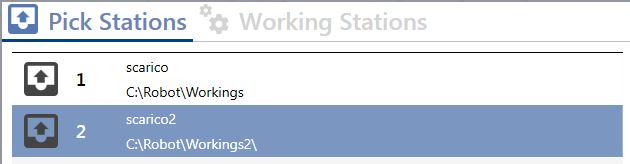

This menu displays parameters relating to the loading stations

Loading station types
Pickup stations
Pickup station specifications:

Working stations
Specifications for all working stations:

Parameters
The following parameters are displayed for both of the above station types:
Number | Loading station identification number |
Minimum height | Minimum loading station height |
Preview length | Loading station length in the “configure station previews” menu |
Preview width | Loading station width in the “configure station previews” menu |
Preview X position | Loading station X position in the “configure station previews” menu |
Preview Y position | Loading station Y position in the “configure station previews” menu |
Preview rotation | Loading station rotation in the “configure station previews” menu |
Tag | Descriptive station name |
Working path | File path relating to the loading station |
Machine sync filepath | File path relating to the loading station |
Machine sync belt filepath | File path relating to the loading station |
Machine sync info filepath | File path relating to the loading station |
Robot working filepath | File path relating to the loading station |
Sync belt quote reference | Synchronisation of the piece coordinate on the belt between the machine and robot |
Sync belt quote real | Synchronisation of the actual piece coordinate on the belt between the machine and robot |
Sync belt quote delta | Difference between the actual and theoretical belt synchronisation coordinates between the machine and robot |
Origin parametrix robot delta X | X coordinate of the transformation between the machine-belt origin and robot-belt origin |
Origin parametrix robot delta Y | Y coordinate of the transformation between the machine-belt origin and robot-belt origin |
Origin parametrix robot rotation | Rotation coordinate A of the transformation between the machine-belt origin and robot-belt origin |
Origin parametrix robot offset delta X | Correction of the X coordinate of the transformation between the machine-belt origin and robot-belt origin |
Origin parametrix robot offset delta Y | Correction of the Y coordinate of the transformation between the machine-belt origin and robot-belt origin |
Origin parametrix robot offset rotation | Correction of rotation coordinate A of the transformation between the machine-belt origin and robot-belt origin |